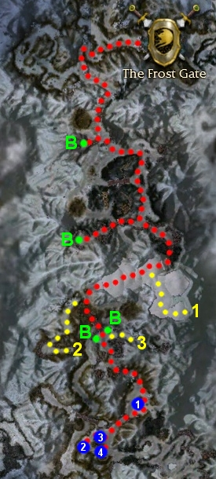

Elite: None / not listed
M6
The Frost Gate
◉ Mission Map

Click to enlarge · Local cache · Wiki
Summary (click to expand)
As the Ascalon refugees make their way across the frozen Shiverpeaks into Kryta, the Stone Summit have blocked their path and closed The Frost Gate . It is up to the heroes to re-open the gate and lead their people safely through the pass.
Region: Northern Shiverpeaks · Mission: 6 of 25 · Type: Cooperative
✓ Objectives
Open the Frost Gate.
- Destroy the ballistae to secure safe passage for Rurik and the Ascalon refugees.
- Retrieve the Gear Lever from the Dwarven fort to open the Frost Gate.
- ADDED: Use the Gear Lever on the Lever Mechanism to reach the Frost Gate.
- *BONUS* Steal the Stone Summit's secret plans for a powerful siege weapon.
- ADDED: Activate the three Frost Gate Lever Mechanisms before the Stone Summit overwhelms Rurik.
→ Walkthrough
Your party is taking the higher path clearing obstacles so Rurik and refugees can make progress on the lower path. The party cannot reach the lower path nor interact with Rurik.
Follow the pass in a general southerly direction while searching for the ballistae (marked in green on the wiki map). Two can be found somewhat west of the normal path. Kill the Stone Summit Engineers next to them. Continue on, following the red path on the wiki map. After destroying all four ballistae, a cinematic will play, a gate will open and your party can head down a hill to pick up the gear lever. Use it on the nearby gear mechanism (blue point 1 on the wiki map) to open the gate just beyond. The mechanism will cause the lever to drop after several seconds. Pick it back up and wait patiently for the gate to open.
Next, enter the area behind the gate. From here you can see two of the three additional mechanisms needed to be triggered by the lever. The third one is below and in front of the other two. Using the gear lever on any of the three mechanisms causes a nearby gate to open, allowing additional enemies to spill out and attack your party. It is recommended to completely clear the area of foes before activating any of these gates, thus lessening the impact of the extra enemies. Shortly (but not immediately) after having used the gear lever on the third mechanism (in that grouping, fourth mechanism overall), the final cinematic is shown, ending the mission.
Alternative end strategy
In Hard mode, the end part can be overwhelming. An alternative strategy to completing this mission is to first kill the two mobs at the mechanisms, then trigger the mechanism at blue point 2 and defeat the two mobs that will run into the mechanism area. This next part can be done with one player character, to prevent a party wipe, while the rest of the party waits in the safety of the area where the Gear Lever originally appeared (blue point 1): trigger the mechanism at blue point 3 and, as soon as the Gear Lever is available again, go trigger the mechanism at blue point 4, which can be done before the mob that was triggered by the mechanism at blue point 3 arrives. This strategy is quicker and prevents the chance of a party wipe, since your party can avoid aggroing and having to fight the mobs that appear after triggering the last 2 mechanisms.
With heroes and henchmen, you can use a speed boost so that you can start both mechanisms, then run to blue point 1 and let your team aggro the remaining foes. Generally, the Summit mobs will not follow you outside the gate; even if they do, you can run away, let your heroes and henchmen absorb damage, and wait out the clock.
Simplistic end strategy
This strategy is especially useful for additional XP and Cartographer. If the other strategies are too stressful, it is possible to simply skip the intermediate cutscene towards the beginning by clicking the "Skip" button. This tactic ultimately leaves Rurik on the other side of the inaccessible area but unable to move, which prevents the timer from functioning. This will allow you to explore the other portions of the map that are otherwise difficult to reach within the allotted time frame. Upon entering the final section, you will notice that, on the path that Rurik would normally take, the Ascalon Refugees and Ascalon Soldiers that spawn will still be killed, but there will be no mission failure as a result. In order to access the hostile areas, you must first use the Gear Lever on two of three Lever Mechanisms. From there, simply pull the enemies to make exploration simpler. To end the mission, use the Gear Lever on the third and final Lever Mechanism as you normally would.
★ Bonus
To finish the bonus:
- You need to free Rornak Stonesledge at yellow point 1 on the wiki map
- Lead him to the ballista at yellow point 2
- Use the ballista to blast open the door that leads to yellow point 3
- Obtain the Secret Siege Weapon Plans from a chest at yellow point 3 and deliver them back to Rornak at the ballista (yellow point 2)
Since Rornak must survive to complete the bonus, consider first clearing the path to yellow point 2 before leading him there. Yellow point 2 houses two mobs of two Dolyak Riders and several Stone Summit. Luring some of these foes away from the Riders and their considerable healing potential may prove a worthy tactic. Be cautious in your attempts to lure the enemies, especially in Hard mode or with henchmen, as the Dolyak Riders will follow as soon as you attack any member of the mob. Consider spreading the enemy lines to accomplish this task with the use of bodyblocking on the road nearby the start of the yellow line that leads to yellow point 2. With the party correctly positioned, pull the enemies into your waiting ambush and crush them with impunity.
Another difficult fight with a random Stone Summit boss awaits the party just beyond the place where the path to yellow point 3 departs from the usual mission route. Another Dolyak Rider in the mob presents an ample challenge in Hard mode; however, be aware that killing the boss and the mob will trigger a cinematic, moving the party forward. Although it is still possible to complete the bonus after the cinematic by backtracking, it is advisable to leave this mob until the bonus is done.
◆ Hard Mode
No dedicated Hard Mode section on the wiki — expect tougher foes and adjusted mechanics. See walkthrough notes.
☠ Bosses & Elites
Elite: None / not listed
Elite: None / not listed
Elite: None / not listed
Elite: None / not listed
Elite: None / not listed
Elite: None / not listed
✦ Tips & Notes
Skill recommendations
- Dolyak Riders can remove hexes, but not conditions; however, Stone Summit Howlers have Plague Touch, so avoid inflicting conditions on the Howlers.
- In Hard mode, enchantment removal skills should prove invaluable by stripping the Dolyak Riders of their Mark of Protection enchantment. Skills that inflict the dazed condition will help in interrupting and preventing the Dolyak Riders from casting Mark of Protection.
- Enchantment-based builds are vulnerable to enchantment removal by Stone Summit Howlers and Sages.
Notes
- Heroes and henchmen sometimes get stuck on the Lever Mechanisms. To avoid this, flag them away so they don't follow you when you go to use a Gear Lever on a Lever Mechanism.
- The two Snow Ettins will sometimes attack the Stone Summit Engineers near the third and fourth ballistae.
- After completing this mission, your party will be teleported to Beacon's Perch.
- Complete exploration of the mission area adds approximately 1.4% to the Tyrian Cartographer title.
- Completion of this mission in Hard Mode will fill in page #7 of the Young Heroes of Tyria storybook.